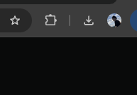

LibreOffice
Документы, таблицы и презентации
Шаг 1
Выберите систему
Укажите операционную систему вашего компьютера.
Процессор Mac
Шаг 2
Установите программу
После выбора системы здесь появятся нужный файл и инструкция.
Шаг 2
Установите программу
Скачайте установщик и следуйте шагам ниже.
Скачать для WindowsОфициальный установочный файл СкачатьИнструкция 4 шага
-

1Дождитесь загрузкиНажмите значок загрузок справа сверху.
-
2
Разрешите запускНажмите «Да» в системном окне.
-
3
Оставьте настройкиНажимайте «Далее», ничего не меняя.
-
4
Завершите установкуНажмите «Готово».
Инструкция 4 шага
- 1Откройте файл .dmg
Он появится в папке «Загрузки».
- 2Перенесите LibreOffice
Перетащите значок в папку Applications («Программы»).
- 3Откройте приложение
Найдите LibreOffice в папке «Программы».
- 4Разрешите первый запуск
Если macOS спросит подтверждение, нажмите «Открыть».